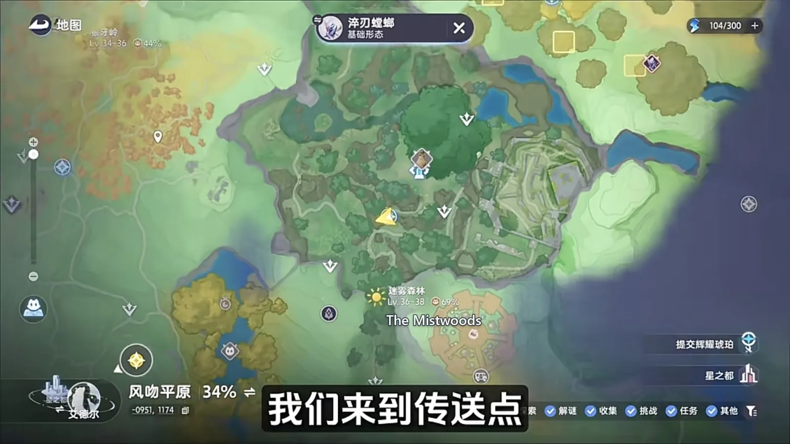
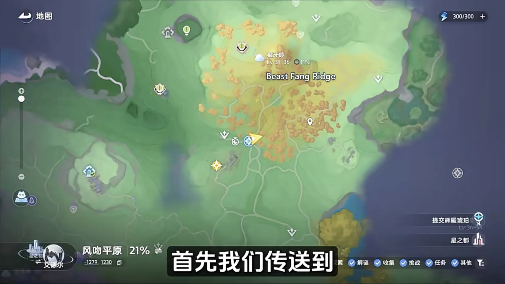

Reading阅读
Guides攻略
17 written, with a date on each已写 17 篇，每篇都带日期
The written guides: how to put a team together, how an event is meant to be played, how to build out the homeland, how to collect every Aniimo — how a system works and what to do about it, one question answered at a time, each dated so you can see when it was last checked.写出来的攻略：配队怎么搭、活动怎么玩、家园怎么建设、全部 Aniimo 怎么收齐 —— 一套系统怎么运作、碰上它该怎么做，一篇答一个问题，每篇都标着核对日期。

October 16, 20262026 年 10 月 16 日
Operation: Egg Heist — The South Map, and 300,000 Out of a Solo Chaos Run《伊莫》抢蛋大作战：朝南这张图，单三混沌也能带满三十万
One of the ten Egg Heist maps, walked end to end: the route in through the front door, which crates are worth opening, how to take Stellarys down through a wall, and how to carry 300,000 out while heavily loaded.十张抢蛋大作战地图里朝南的那张，从进门走到撤离：路线怎么认、哪些箱子值得开、星魔师怎么隔墙打，以及重度负重时怎么把三十万带出去。

October 16, 20262026 年 10 月 16 日
Aniimo's Water Team: Three of the Four Are There to Set Up Sherro's One Sword《伊莫》水系配队：一剑流星骑士，三只铺路只为最后那一剑
A four-Aniimo Water party built around one damage dealer: what Piopiota, Panpanta and Turbo each lay down before Sherro comes in, and the order to switch them in.一套四只的水系阵容，全部围绕一个输出位搭：星骑士进场之前，漂漂獭、胖胖獭、蓬蓬羊各负责什么，以及换人的顺序。

October 16, 20262026 年 10 月 16 日
The Mistwoods: Every Spawn Point, Walked in One Lap《全地图、全形态伊莫收集》：迷雾森林
Two passes of The Mistwoods: the waypoint and the deep wood on either side of the night switch, the walk out for the moth, the pup and the fish, and one Omega that stays put once its quest is done.迷雾森林两批收完：传送点和林子分白天夜里各扫一遍，出森林顺着溪水收掉蝶、犬、鱼，最后是一只做完支线才肯常驻的 Omega。

October 16, 20262026 年 10 月 16 日
Berylline Causeway: Every Spawn Point, Walked in One Lap《全地图、全形态伊莫收集》：青石台
Two passes of Berylline Causeway: the outer ring underfoot in daylight, the terrace inside only after dark, and two Alphas plus a Prismana Form waiting at the end.青石台两趟走完：外圈白天顺着路就收到了，台地内部要等晚上，末尾压着两个 Alpha 和一只虹光形态。

October 16, 20262026 年 10 月 16 日
Forest of Falling Stars: Every Spawn Point, Walked in One Lap《全地图、全形态伊莫收集》：星落林
One lap of Forest of Falling Stars: the flower field at the waypoint, the two fish below the ridge, the tree that only lights up under Prismana weather, and a coastline that hands over its birds only in rain.星落林一趟跑完：落地先扫花海，翻坡收溪边的两尾鱼，再上沙坡等虹光天气，最后下到海滩，收只有下雨才会出来的那几只。

October 16, 20262026 年 10 月 16 日
Beast Fang Ridge: Every Spawn Point, Walked in One Lap《全地图、全形态伊莫收集》：狼牙岭
One lap of Beast Fang Ridge: a pair underfoot at the waypoint, a few in the ruins and the hills, and the rest behind a leaf pile, a night quest, a thunderstorm or a Prismana unlock.狼牙岭一趟走完：落地就是小炭犬和焚火狼，废墟和山里还有几只，剩下的分别卡在枯叶堆、夜晚、雷雨天和虹光天气上。
Showing the first 6 of 17.这里只放了前 6 条，共 17 条。